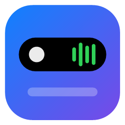

Lo importante, sin estorbar.
What matters, out of your way.
Una isla flotante para Windows que muestra tu música, tus notificaciones, el calendario, el clima y el estado de la PC. Se expande cuando pasa algo y se achica cuando termina.
A floating island for Windows that shows your music, notifications, calendar, weather and PC status. It expands when something happens and shrinks back when it's done.
Gratis · Windows 10 y 11 (64 bits) · Español e inglés
Free · Windows 10 and 11 (64-bit) · English and Spanish
Preguntas frecuentesFAQ
¿Es gratis?Is it free?
Sí, y de código abierto (GPL-3.0). No tiene publicidad ni versiones pagas.
Yes, and open source (GPL-3.0). No ads and no paid tiers.
¿Guarda mis datos personales o de pago?Does it store my personal or payment data?
No. DeskIsleBar no te pide ni guarda datos personales como nombre, mail, documento, teléfono ni tarjetas: no tiene cuentas, ni pagos, ni compras dentro de la app. Lo único que guarda es tu configuración (la ciudad del clima, tus notas y los calendarios que vinculás, cifrados), y solo en tu PC: nunca se manda a ningún servidor.
No. DeskIsleBar doesn't ask for or store personal data such as your name, email, ID, phone number or cards: it has no accounts, no payments and no in-app purchases. The only thing it stores is your settings (the weather city, your notes and the calendars you link, encrypted), and only on your PC: it's never sent to any server.
Si invitás un cafecito, el pago se hace en la página de Cafecito (con Mercado Pago o transferencia): DeskIsleBar y este sitio nunca ven esos datos.
If you buy me a coffee, the payment happens on Cafecito's site (with Mercado Pago or bank transfer): DeskIsleBar and this website never see that data.
¿Por qué Windows me avisa al abrir el instalador?Why does Windows warn me when I open the installer?
El instalador todavía no tiene firma digital, así que SmartScreen no lo reconoce. Elegí Más información → Ejecutar de todas formas. El código está publicado en GitHub para que cualquiera lo revise.
The installer isn't code-signed yet, so SmartScreen doesn't recognize it. Choose More info → Run anyway. The code is on GitHub for anyone to review.
¿Necesita permisos de administrador?Does it need admin rights?
No. Se instala solo para tu usuario y trae todo lo que necesita.
No. It installs just for your user and brings everything it needs.
¿Cómo se actualiza?How does it update?
Cuando hay una versión nueva, la isla te avisa. Un clic y se actualiza sola, conservando tu configuración.
When there's a new version, the island lets you know. One click and it updates itself, keeping your settings.
Cerré la isla, ¿cómo la vuelvo a abrir?I closed the island, how do I open it again?
Buscá DeskIsleBar en el menú Inicio (o en el buscador de Windows) y abrila. Si tenés activado Arrancar con Windows, también vuelve sola la próxima vez que prendas la PC.
Search for DeskIsleBar in the Start menu (or in Windows search) and open it. If Start with Windows is on, it also comes back by itself the next time you turn on your PC.
¿Cómo la desinstalo?How do I uninstall it?
Como cualquier programa: Configuración → Aplicaciones → DeskIsleBar → Desinstalar. Te pregunta si también querés borrar tu configuración.
Like any program: Settings → Apps → DeskIsleBar → Uninstall. It asks whether you also want to delete your settings.
¿Encontré un error, dónde lo cuento?I found a bug, where do I report it?
En los issues de GitHub, o por mail a facughub.apps@gmail.com. Contá qué pasó y cuándo, y adjuntá el registro de la isla:
On GitHub issues, or by email at facughub.apps@gmail.com. Tell what happened and when, and attach the island's log:
- Apretá Win + R, pegá
%LOCALAPPDATA%\DeskIsleBar y apretá Enter.
- Adjuntá el archivo
deskislebar.log (y deskislebar.log.old, si está).
- Opcional, el informe de diagnóstico: en Win + R pegá
"%LOCALAPPDATA%\Programs\DeskIsleBar\DeskIsleBar.exe" --diagnostico y adjuntá el texto que se abre.
- Press Win + R, paste
%LOCALAPPDATA%\DeskIsleBar and press Enter.
- Attach the
deskislebar.log file (and deskislebar.log.old, if it's there).
- Optional, the diagnostics report: in Win + R paste
"%LOCALAPPDATA%\Programs\DeskIsleBar\DeskIsleBar.exe" --diagnostico and attach the text that opens.
El registro no guarda el contenido de tus notificaciones ni tus links de calendario, y tapa tu nombre de usuario. Igual podés abrirlo y mirarlo antes de mandarlo.
The log doesn't store the content of your notifications or your calendar links, and it masks your user name. You can still open it and check it before sending it.